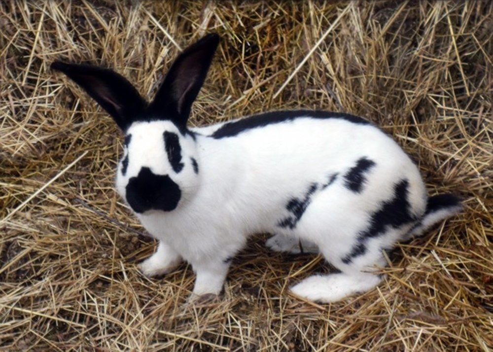
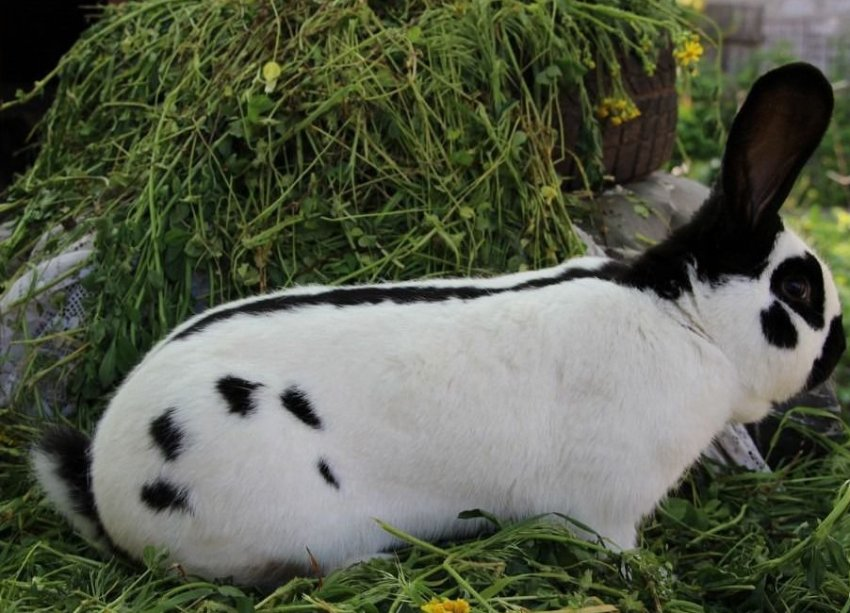
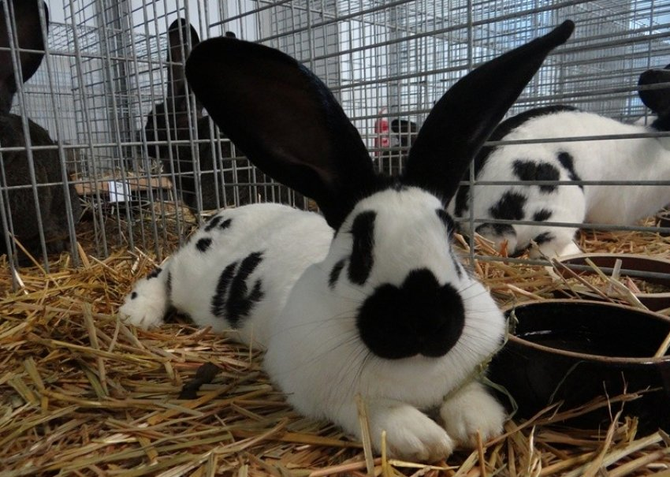
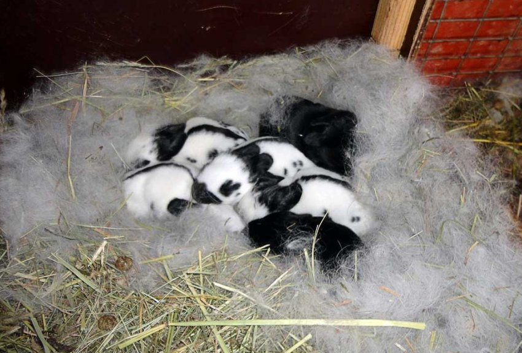
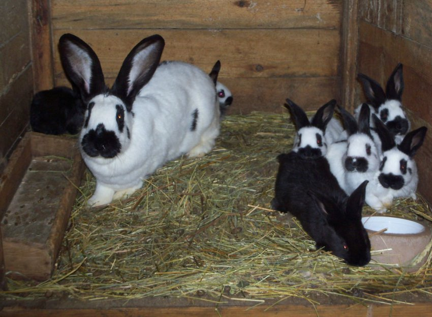
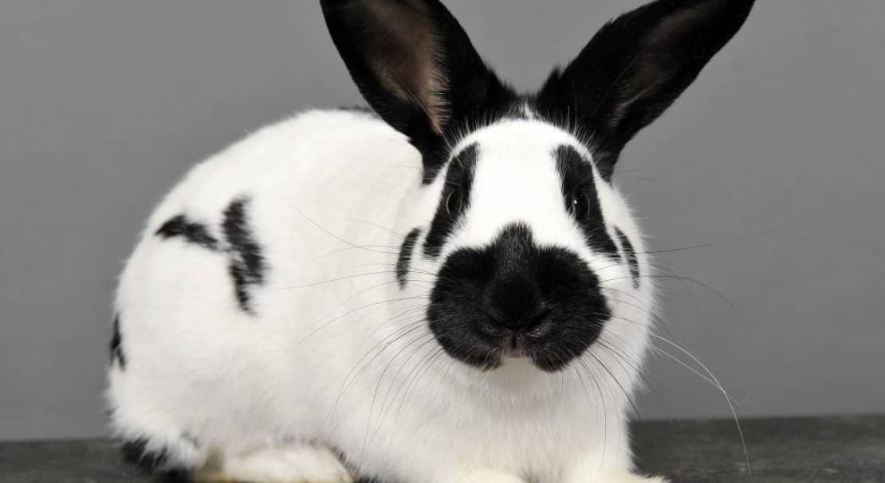
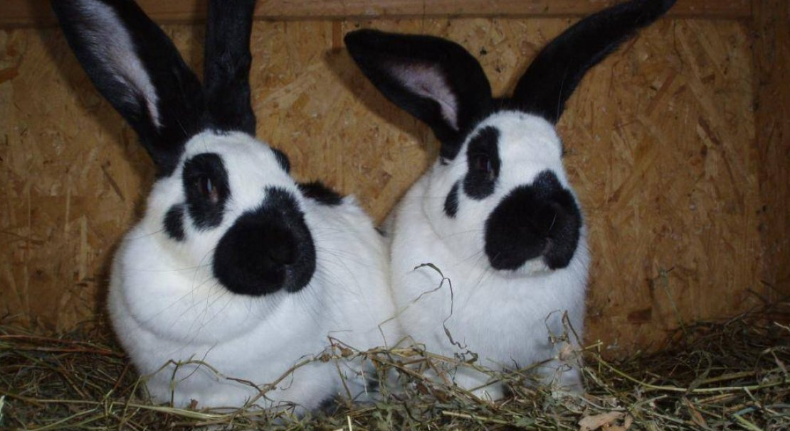

Голова середня, округлої форми. У самців — масивна і широка, у самок — дещо довгаста. Вуха прямі, добре опушені, довжиною 16,5–18 см. Вуха широко розставлені, тримаються вертикально і ніколи не звисають.
Величний, красивий, лагідний. Порода з чотирьохсотрічною
історією, що підкорює
серця фермерів і домашніх господарств.

Німецький строкатий велетень (нім. Deutschen Riesen Schecken) — велика порода кролів м'ясо-шкуркового напряму, відома також під назвами «Строкач» та «Німецький метелик». Це одна з найбільш впізнаваних порід у світі завдяки характерному плямистому чорно-білому забарвленню.
Порода поєднує в собі рідкісне тріо переваг: вражаючий розмір, спокійний характер і гарний імунітет. Саме тому будь-де від приватного двору до домашньої квартири — строкатий велетень почувається як вдома і стає улюбленцем родини.
Завдяки пізній статевій зрілості та яскраво вираженому материнському інстинкту самок, ця порода є ідеальною як для промислового розведення, так і для утримання як домашнього улюбленця.
Вихід м'яса значно перевищує показники стандартних порід. Тушка щільна, добре обмускульована.
Порода стійка до хвороб, легко адаптується до кліматичних умов, зокрема північних регіонів.
Спокійні, без агресії, швидко звикають до господаря. Ідеально підходять для сімей із дітьми.
Гарні «мамки» — самки мають виражений материнський інстинкт і приводять великі посліди.
Перші гібриди були отримані близько 400 років тому в Англії — місцеві породи схрещувалися з Бельгійським велетнем. Однак гібриди мали нестійкий генотип і не могли бути виділені в окрему породу.
У Франції розводили кролів з кольоровими мордами, схожих на сучасних строкачів — вони отримали назву «Papillon» (Метелик). Їхній розмір та тип забарвлення вплинули на формування породи.
Повністю сформовані кролики були представлені на виставці в Західній Німеччині. Саме тут закріплювалися правильний тип забарвлення та м'ясні якості породи.
Тварини були представлені на виставці у Вестфалії та отримали широке визнання серед зоологів і кролівників Німеччини.
Отто Рейнгардт схрестив Німецького Строкатого Велетня з чорним Фламандським Гігантом — так з'явилась споріднена порода «Гігантський Чекерд», відома сьогодні.
Порода отримала офіційну реєстрацію і стандарт. З того часу вона поширилась по всій Європі й здобула міжнародне визнання серед кролівників.

Голова середня, округлої форми. У самців — масивна і широка, у самок — дещо довгаста. Вуха прямі, добре опушені, довжиною 16,5–18 см. Вуха широко розставлені, тримаються вертикально і ніколи не звисають.
Тулуб однаково щільний і потужний на всіх ділянках, трохи подовжений. Спина широка, злегка аркоподібна. Круп широкий, округлий. Лапи середньої довжини, прямі і сильні. Загальна будова — атлетична, без витягнутості або вираженої худорби.
Шерсть густа, рівна, пружна. Підшерсток добре розвинений і теплий — саме завдяки йому порода чудово переносить холодний клімат. Шкура цінна для хутрового виробництва.
Класичне забарвлення — біле тло з чорними плямами. Характерні елементи малюнку: темна смуга вздовж хребта, плями на боках, темне кільце навколо ока та темна пляма на носі (звідси й назва «Метелик»). Зустрічаються також сірі, блакитні, коричневі та жовтуваті варіанти. Незначні білі вкраплення на темних ділянках вважаються допустимими.
Дорослий кролик важить 5–10 кг. Мінімальна вага для самок — 5,4 кг, для самців — 5 кг. Довжина тіла — від 70 до 80 см і більше. Відомі екземпляри вагою понад 11 кг. Вага тушки значно перевищує стандарти супермаркетів.
Всупереч упередженням — кролики цієї породи відрізняються надзвичайно високим інтелектом. Вони швидко запам'ятовують своє ім'я, реагують на голос господаря та піддаються дресируванню. Це робить їх улюбленцями не лише на фермах, але й у домашніх умовах.
Характер — спокійний і дружелюбний. Агресія відсутня навіть у самців. Кролики комунікабельні, швидко звикають до людей і із задоволенням йдуть на руки. Завдяки цьому порода ідеально підходить для сімей із дітьми.
Строкаті велетні добре переносять самотність (якщо господар проводить з ними час), але також можуть утримуватись у парах чи групах. При правильному введенні нових особин — конфліктів практично не виникає.
Настає у самок і самців приблизно з 5 місяців. Це пізніше, ніж у дрібних порід, але є перевагою — гніздо не треба розсаджувати завчасно.
Самця підпускають до самки (не навпаки!) на нейтральній або знайомій для самки території. Злучка зазвичай проходить без ускладнень.
Термін сукрільності — 28–32 дні. За 5–7 днів до окролу самку переводять у родильну клітку з гніздовим ящиком, наповненим м'яким сіном.
Середній послід — 9–14 кроленят. Самки — «гарні мамки»: годують усіх дитинчат, доглядають за гніздом. Загибель молодняка мінімальна.
Кроленята живляться молоком матері до 45–60 днів. Поступово переходять на тверду їжу з 3 тижнів. Відлучення — не раніше 30–40 днів.
Кроленята інтенсивно ростуть і досягають забійної ваги 4–5 кг до 4–5 місяців. Вихід м'яса — 55–60% від живої маси.
Для збереження якостей породи рекомендується використовувати лише чистопородних виробників. При схрещуванні з іншими породами характерний малюнок забарвлення може суттєво змінитись або зникнути.





Так, незважаючи на великий розмір, строкатий велетень добре почувається і в квартирних умовах. Головне — забезпечити просторий вольєр або кімнату для вигулу (мінімум 3 години на день), правильне харчування та постійне спілкування. Вдача у цих кролів спокійна і вони не руйнують меблі, якщо мають достатньо іграшок і активності.
Чистопородний строкач має специфічний малюнок: суцільну темну смугу вздовж хребта, симетричні плями на боках, темне кільце навколо ока і характерну плямочку «метелик» на носі. Голова — масивна (у самців), вуха прямі і довгі (від 16 см). Відхилення від стандарту (злиття плям, несиметричний малюнок) — ознаки метизації.
При правильному утриманні — від 5 до 9 років. На фермерстві цей термін може бути меншим (2–4 роки для м'ясних тварин). Як домашній улюбленець при повноцінному ветеринарному спостереженні, правильному харчуванні та любові — може прожити до 9–10 років.
Так! Строкаті велетні — один із найбезпечніших варіантів кроликів для сімей із дітьми. Вони не кусаються без причини, не лякаються різких рухів (з досвідом) і легко дресируються. Дітям варто пояснити, що тримати кролика треба обережно — через великий розмір тварина може травмуватись при падінні.
Приблизний добовий раціон дорослої особини (6–8 кг): сіно — необмежено (основа раціону), свіжі овочі — 200–300 г, комбікорм або зерно — 100–150 г, зелена трава влітку — до 400 г. Вода — 400–500 мл на добу. Ожиріння — реальна проблема при надлишку зерна і нестачі руху.
Обов'язкові вакцини: проти міксоматозу (двічі на рік) і проти вірусної геморагічної хвороби кролів (ВГХК) (раз на рік). Часто використовують комплексну вакцину, яка захищає від обох хвороб одночасно. Першу вакцинацію проводять у 45 днів. Крім цього, раз на 3 місяці — профілактика кокцидіозу.
Строкачі мирно уживаються з іншими кроликами, морськими свинками і навіть деякими породами кішок. З собаками — залежить від породи і виховання пса. Ніколи не тримайте кролика з тхорями, щурами або хижими птахами. Знайомство з новою твариною завжди проводьте поступово і під наглядом.
Це рішення, яке принесе радість на довгі роки. Правильний вибір породи — перший крок до щасливого кролівництва.